Projets
Flight Experience
Site d'un centre de simulateurs de vol à Nivelles, avec de vrais pilotes de chasse. Refonte complète en thème WordPress sur mesure, en trois langues (FR/NL/EN), avec réservation en ligne via Bookingkit.
Voir le site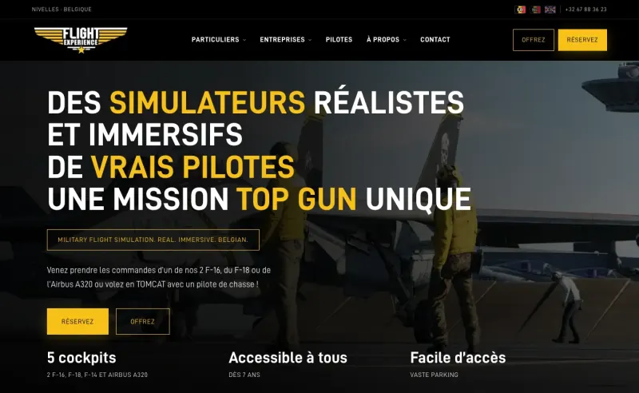

Chiropracteur Mons
Site vitrine pour un cabinet de chiropraxie à Mons. J'ai tout pris en charge en direct avec le client : maquette, développement WordPress, mise en ligne et maintenance.
Voir le site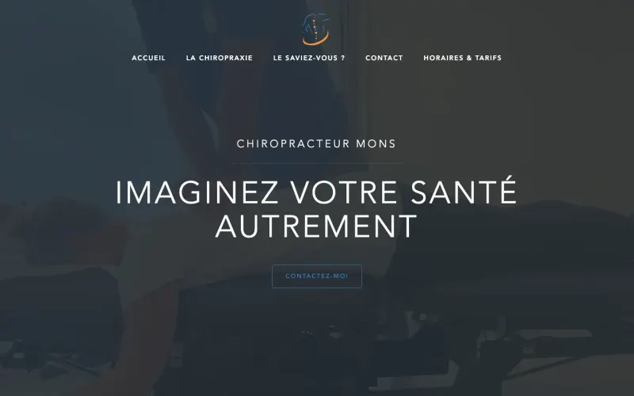

Notaire Hospel
Site d'une étude notariale à Montigny-le-Tilleul. Intégration des maquettes de l'agence en thème WordPress sur mesure, avec des contenus que le client modifie lui-même.
Voir le site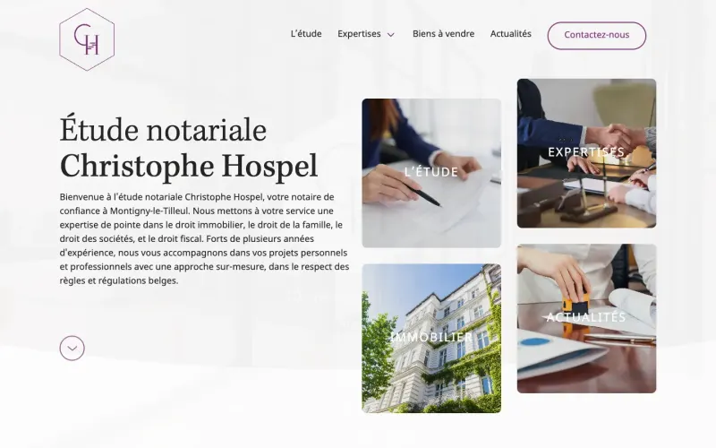

Jade & Antoine
Template de site de mariage, présenté avec des données fictives. Conception et développement complets, avec réponses des invités envoyées par email et centralisées dans un Google Drive.
Voir le template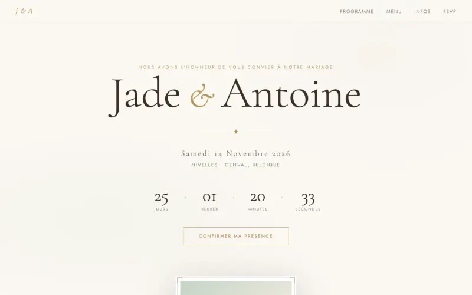

SPIE Belgium
Site de recrutement de SPIE Belgium pour attirer techniciens et chefs de projet. Intégration front-end, animations au scroll et mise en ligne.
Voir le site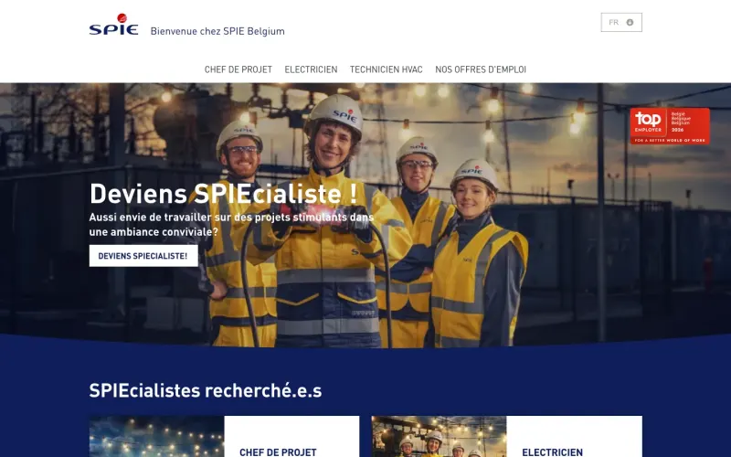

Platform Awards
Prix européen qui récompense la coopération décentralisée au développement. Développement du thème WordPress sur mesure : candidatures, jury et lauréats.
Voir le site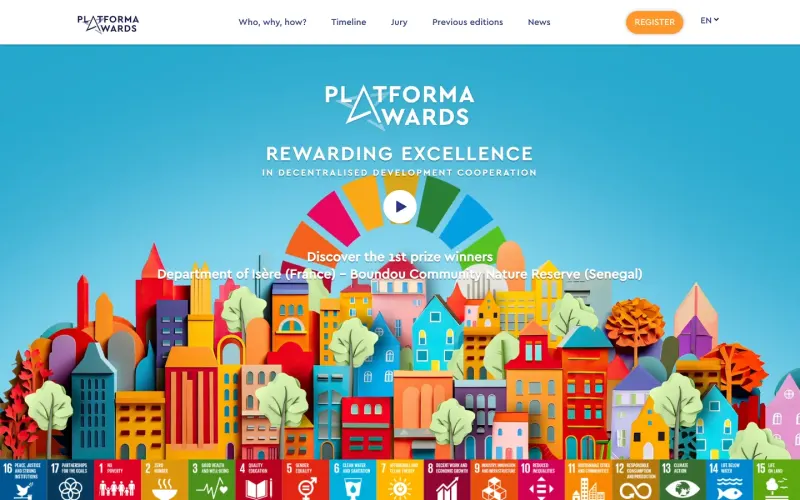

Château de Courrière
Site d'un château en Wallonie qui accueille événements, séminaires et hôtes. Développement du thème WordPress sur mesure : galeries photo, événements et hébergements.
Voir le site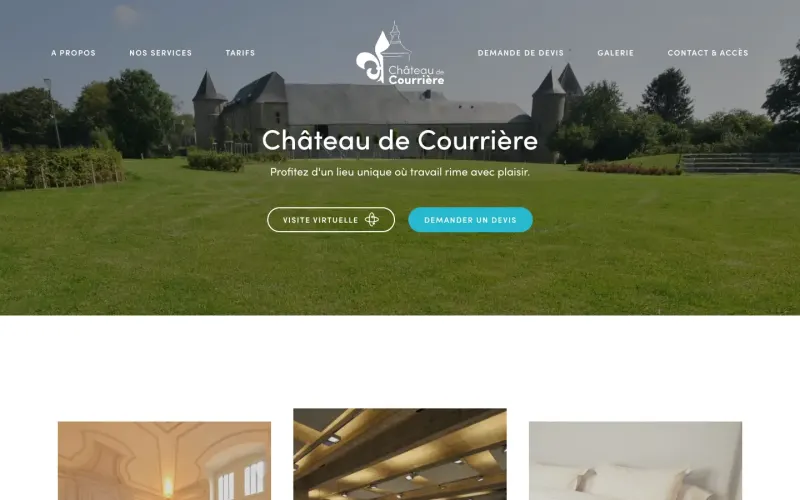

Warehouses Estates Belgium
Site d'une société immobilière cotée, spécialisée en entrepôts et bureaux. Développement du thème WordPress sur mesure pour présenter son patrimoine et ses espaces à louer.
Voir le site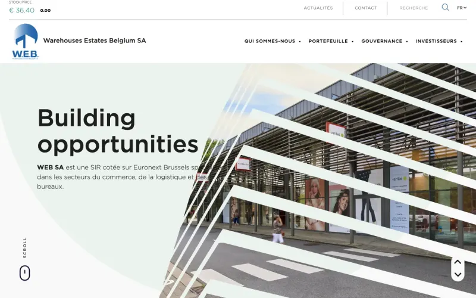

Into The Wild Festival
Site d'un festival belge, de l'annonce à la billetterie. Personnalisation du thème WordPress et mise en page de la programmation et des éditions passées.
Voir le site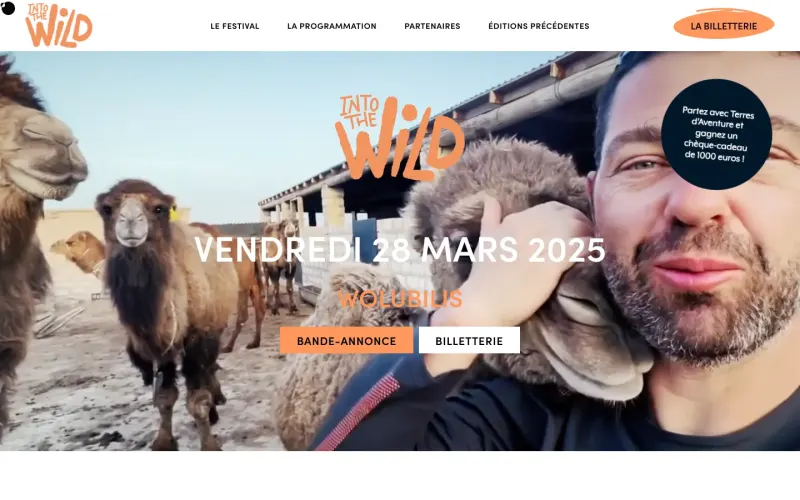

Memisa
Site trilingue (FR/EN/NL) d'une ONG médicale belge qui défend l'accès aux soins. Développement et évolutions du thème WordPress sur mesure : traductions, animations et accessibilité.
Voir le site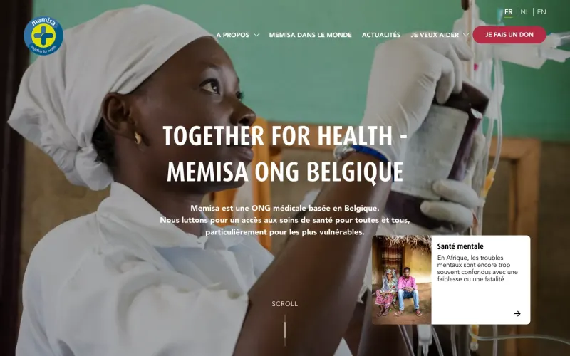

Brussels Special Venues
Plateforme qui réunit les plus beaux lieux événementiels de Bruxelles. Développement du thème WordPress sur mesure, avec recherche avancée et fiches de lieux.
Voir le site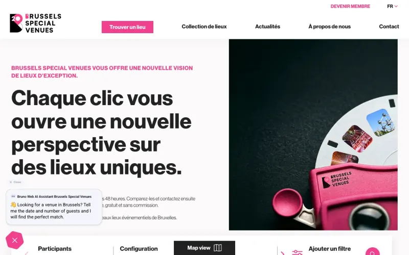

Into The Blue
Site d'Into The Blue, le festival de la mer de Bruxelles, mis à jour à chaque édition. Développement et évolutions du thème WordPress sur mesure.
Voir le site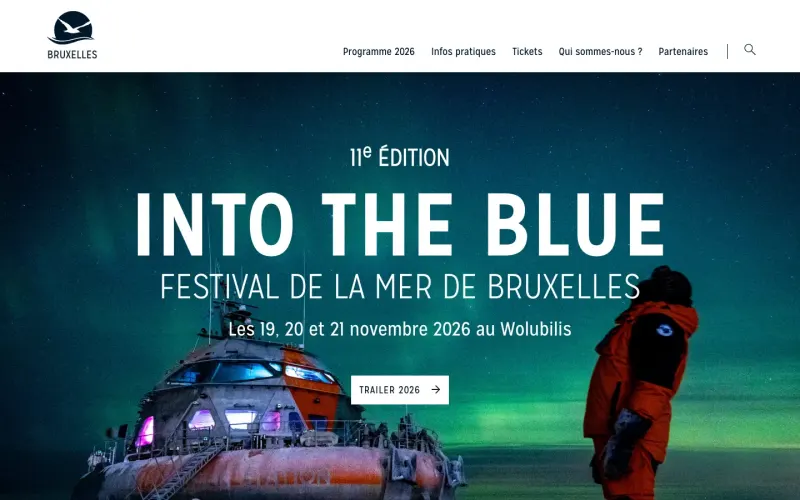

The C Coach
Site d'un cabinet de coaching et de formation pour particuliers et entreprises. Maintenance et évolutions WordPress : mises à jour, corrections et optimisations.
Voir le site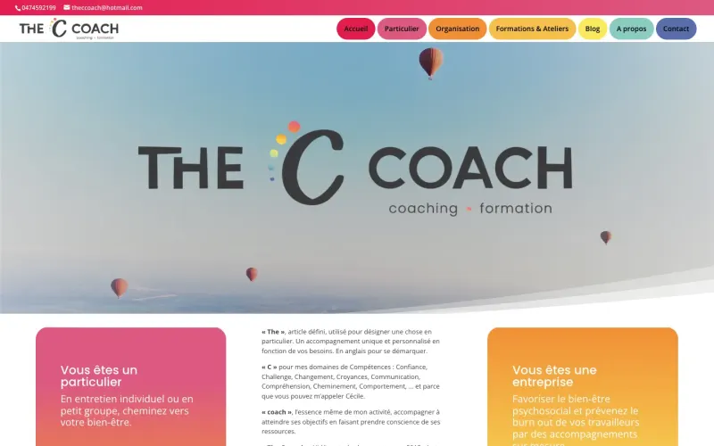

Raymond Delepierre
Site d'un artiste sonore et visuel bruxellois. Maintenance et évolutions WordPress : mises à jour, corrections et optimisations.
Voir le site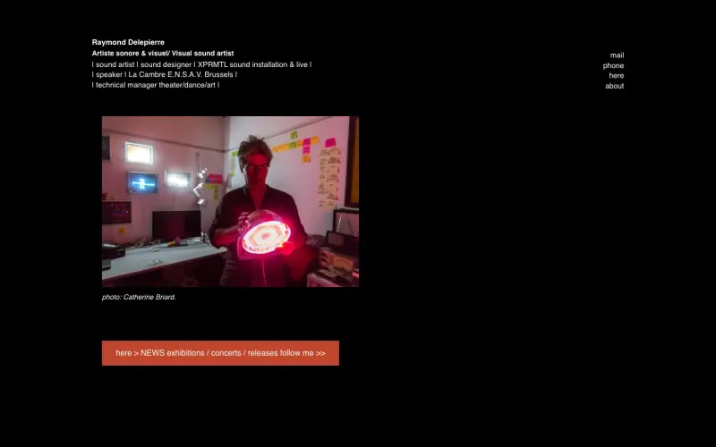

Météo en direct
Application météo en temps réel au design d'instruments vintage. Projet perso en JavaScript vanilla : prévisions 24h et 7 jours, géolocalisation et villes favorites.
Voir le site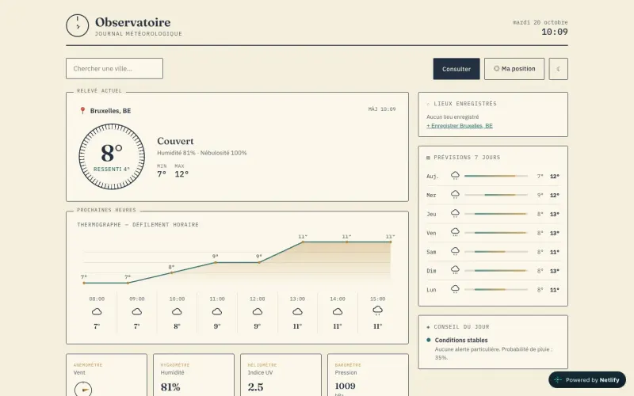